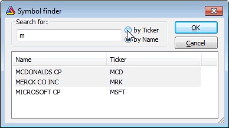

The Symbol Finder window allows you to quickly search the database for a symbol by typing the first letters of its full name or ticker. This feature is very useful when you don't know the ticker symbol. The Symbol Finder is accessible via Edit->Find symbol, Symbol->Find menus, or by pressing the F3 key.
To find a symbol, just type one or more letters in the Search for box. Choose by Name if you want to perform a full name search, or choose by Ticker if you want to look up the ticker. When you type the letters in the edit box, appropriate symbols will appear in the list. You can click on an item to choose one, or you can just press the ENTER key to select the first one. Note that searching starts when the edit box contains at least one character; if it is empty, no symbol is shown in the list.